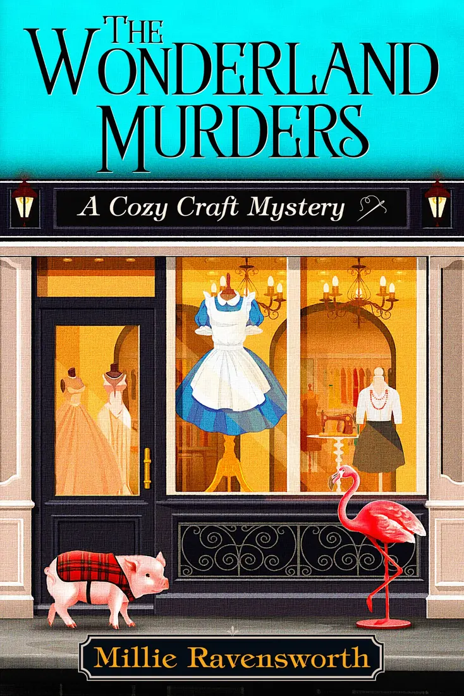
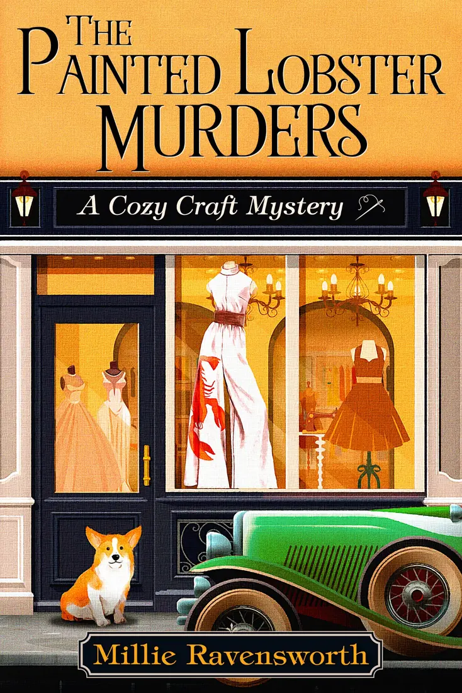
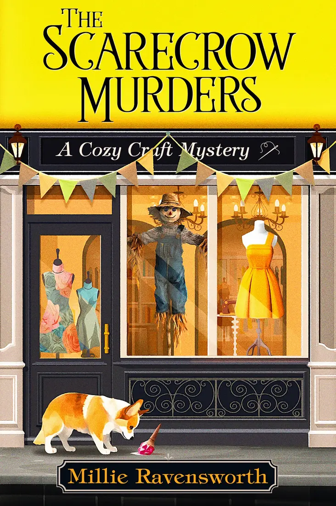
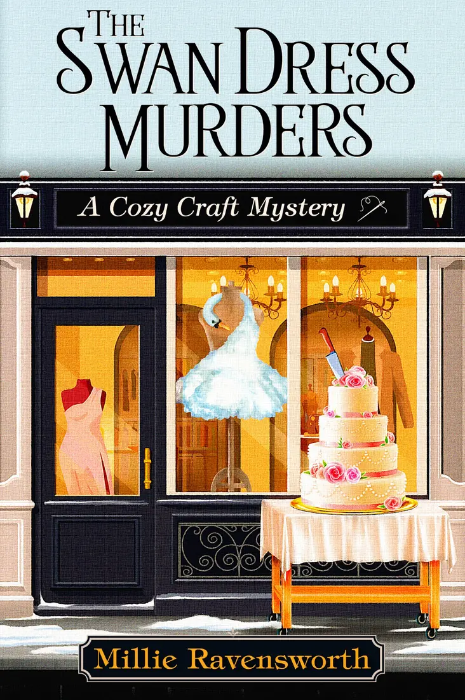
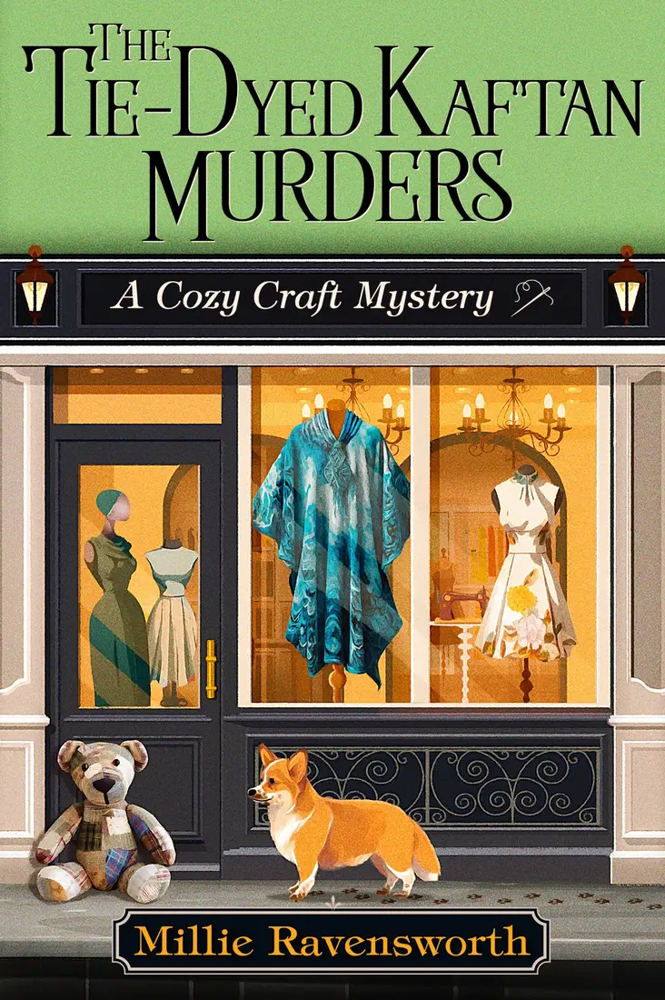
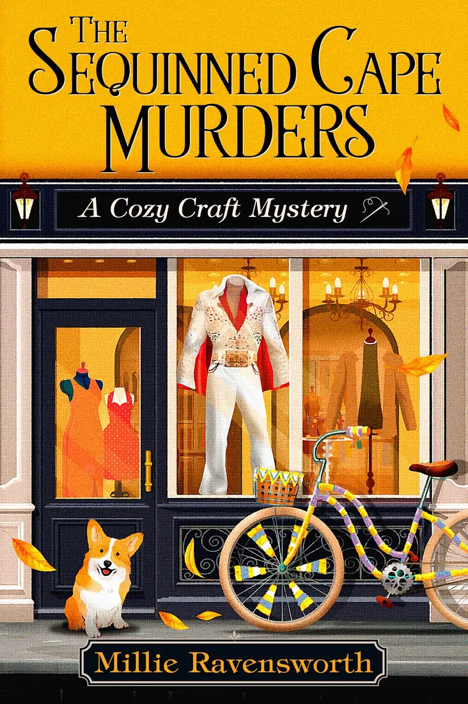

A Cozy Craft Mystery
Murder, mayhem and a very important sewing commission
Welcome to Cozy Crafts: a fabric shop full of colour, friendship, local gossip—and rather more murder than anyone ordered.
Read on AmazonAvailable for Kindle, audiobook, paperback and in Kindle Unlimited.
Meet Penny and Izzy
A fresh start. A family fabric shop. Two suspicious deaths.
When Penny loses her London job, she returns to the Suffolk market town she once called home. Her grandmother needs help, the family sewing shop needs saving, and her brilliantly creative cousin Izzy needs somebody sensible nearby.
Then an unpopular library manager is poisoned and a second victim meets a decidedly unusual end. Between an Alice in Wonderland dress, a decades-old letter and the secrets stitched into a close-knit community, Penny and Izzy have a mystery to unravel.
Is this your sort of mystery?
Perfect for readers who love…
- Warm, witty British cozy mysteries
- Sewing, dressmaking and glorious fabric detail
- Eccentric small-town characters and long-held secrets
- Unusual, non-graphic murders and satisfying clues
- A sensible heroine paired with a chaotic creative cousin
- Complete series ready to read in Kindle Unlimited
A mystery with real craft at its heart
Come for the whodunnit. Stay for the sewing shop.
Cozy Crafts is more than a picturesque backdrop. Fabrics, machines and dressmaking run through the mystery, from cotton lawn and seersucker to ruffler feet, overlockers and the pleasure of making something beautiful.
All wrapped in dry British humour, gentle suspense and the irresistible complications of small-town life.
The complete Cozy Craft Mystery series
Six mysteries. One irresistible sewing shop.





Open the door to Cozy Crafts
Start The Wonderland Murders today
A warm, funny sewing mystery—and the beginning of a complete six-book series.
Read on AmazonYou’ll be taken to the book’s Amazon page.